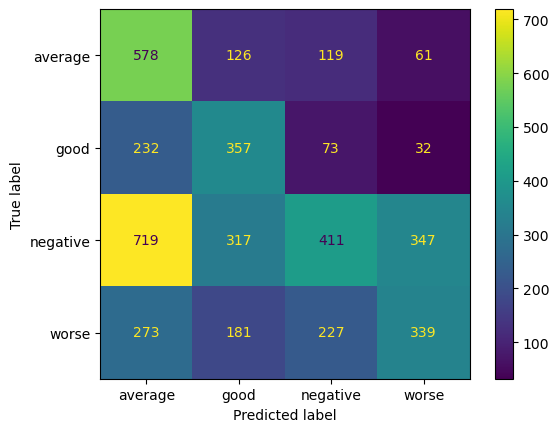

Support Vector Machines
Overview
Support Vector Machine (SVM) is a supervised machine learning algorithm used for classification and regression tasks.
It is particularly well-suited for classification tasks and has been widely used in various domains, including text classification, image recognition, and bioinformatics.
At its core, SVM aims to find the optimal hyperplane that separates data points of different classes with the maximum margin.
SVM can handle nonlinear relationships between features and class labels by mapping the input data into a higher-dimensional feature space using kernel functions.
Common kernel functions include linear, polynomial, and radial basis function (RBF). The kernel trick allows SVM to find nonlinear decision boundaries in the original feature space without explicitly computing the transformed feature space.
SVMs work well in high-dimensional spaces, making them suitable for text classification tasks where each word or term represents a feature. Text data is typically high-dimensional due to the large number of unique words or terms, and SVMs can effectively separate data points in such spaces.
SVMs can efficiently handle nonlinear relationships between features and class labels using different kernel functions (e.g., linear, polynomial, radial basis function). This flexibility allows SVMs to capture complex patterns and decision boundaries in text data, leading to accurate classification.
SVMs typically rely only on a subset of training examples (support vectors) to define the decision boundary. This property makes SVMs memory-efficient, especially in text classification tasks with large datasets, where only a small fraction of training examples may be relevant for defining the decision boundary.
Data Prep
To split data into training and testing sets without any overlap, you can use the train_test_split function from the scikit-learn library in Python. It internally handles choosing datapoints without replacement, making sure that there are no common data points between training and testing set.
Naive Bayes in python requires all the features to be in numeric form. Here is the sample input dataset:

Link to the data
Applying train test split divide the data and labels into training and testing sets.
X_train

X_test

Y_train and Y_test

Code
Here is the code to implement SVM classifier
Results
Let's take a look at the classification metrics for different kernels, when used with the text dataset.
RBF
Polynomial
Sigmoid
Conclusion
RBF outperformed the rest of the two kernels for this dataset. In addition to that, RBF kernel was able to acheive a higher accuracy for minority class, as compared to the other kernels.
In addition to that, SVM performed better than naive bayes and decision trees overall. Since the dataset has well-separated classes, SVMs outperformed Decision Trees and Naive Bayes, which do not explicitly optimize for margin maximization.
SVMs make fewer assumptions about the underlying data distribution compared to Naive Bayes, which assumes feature independence, and Decision Trees, which may suffer from bias towards dominant features or classes.